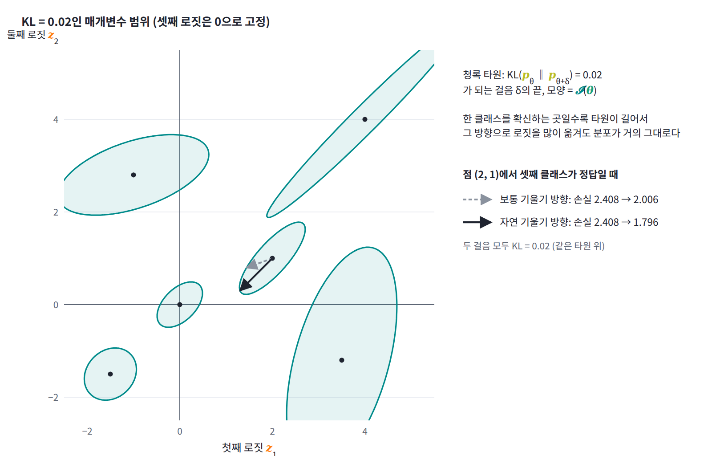

자연 기울기: Fisher 정보로 잰 걸음
매개변수를 δ만큼 바꾸면 분포는 얼마나 달라질까? 경사 하강은 매개변수 좌표에서 잰 길이로 걸음의 크기를 정하지만, 우리가 정말 신경 쓰는 것은 매개변수가 아니라 모델이 내놓는 분포다. 분포가 달라진 정도로 걸음을 재면 무엇이 바뀔까?
KL로 잰 걸음의 크기
에너지가 매개변수의 일차식인 볼츠만 분포에서는 두 분포가 다른 정도를 재는 KL 발산(Kullback–Leibler divergence)을 정확히 ln Z로 적을 수 있고, δ가 작으면 ln Z를 δ의 거듭제곱으로 펼친 식(테일러 전개)에서 δ를 두 번 곱한 2차 항만 남는다. 일반적인 모델에서도 2차까지는 같은 모양이 성립한다.
첫 식은 매개변수 공간의 거리를 매개변수 좌표의 제곱합이 아니라 분포가 달라진 정도로 재면 그 거리를 재는 자(계량, metric)가 Fisher 정보라는 뜻이다. 모델이 크게 흔들리는 방향의 매개변수는 조금만 움직여도 분포가 많이 바뀌고, 흔들림이 없는 방향은 아무리 움직여도 분포가 그대로다. KL의 크기를 일정하게 묶어 두고 손실을 가장 많이 줄이는 걸음을 찾으면 둘째 식, 곧 기울기에 Fisher 정보의 역행렬을 곱한 자연 기울기(분포 공간에서 가장 가파른 방향, natural gradient)가 나온다. 둘째 식의 η는 한 걸음에 기울기를 몇 배 해서 움직일지 정하는 학습률이다.

둘째 식이 왜 나오는지 그림의 점 (2, 1)에서 직접 찾아보자. 셋째 클래스가 정답이면 손실은 2.408이고, 두 로짓에 대한 손실의 기울기는 (0.665, 0.245)다. 보통 경사 하강은 이 기울기의 반대쪽, 곧 첫째 로짓을 주로 낮추는 쪽으로 간다. 그런데 KL이 0.02가 되는 타원의 둘레를 한 바퀴 돌며 걸음을 하나씩 대 보면, 손실을 가장 많이 줄이는 걸음은 두 로짓을 똑같이 낮추는 (−1, −1) 방향이다. 셋째 로짓은 0으로 묶여 있으니, 이것은 정답인 셋째 로짓 하나를 올리는 것과 같은 걸음이다. 기울기에 𝓘(θ)의 역행렬을 곱하면 바로 이 방향이 나온다. 타원이 길게 누운 쪽, 곧 분포가 덜 바뀌는 쪽으로는 매개변수를 더 크게 움직여도 KL이 그대로이므로, 같은 KL 안에서 손실을 더 많이 줄일 수 있다.
ML에서: 자연 기울기와 K-FAC
아마리(1998)의 논문 요약 첫 문장은 「매개변수 공간이 어떤 구조를 가지면 함수의 보통 기울기는 가장 가파른 방향을 나타내지 않지만 자연 기울기는 나타낸다」이다. 이 장을 마친 독자는 이 문장을 「매개변수마다 모델을 흔드는 정도가 다르므로, 그 흔들림의 공분산으로 기울기를 나눠야 분포가 실제로 가장 빨리 좋아지는 방향이 된다」로 읽게 된다. 에너지가 매개변수의 일차식이면 Fisher 정보가 음의 로그우도의 헤시안과 같으므로, 이때 자연 기울기는 뉴턴 방법과 같은 걸음이 된다. 큰 신경망에서는 이 행렬을 그대로 역행렬로 만들 수 없어서 K-FAC(Kronecker-factored approximate curvature의 머리글자)처럼 층별로 쪼개어 어림하는 방법들이 쓰인다. 출력층이 softmax인 모델에서 가우스–뉴턴 행렬(Gauss–Newton matrix, 손실의 헤시안에서 신경망 출력 자체의 2차 미분이 들어간 항을 뺀 어림)과 Fisher 정보 행렬이 같아진다는, 2차 최적화 문헌에서 널리 쓰이는 사실도 교차 엔트로피의 로짓 헤시안이 모델이 뽑은 원-핫의 공분산이라는 데서 나온다.
문제 11. 같은 걸음, 다른 변화
로짓이 θ 하나인 동전 모델 p = 1/(1 + e^(−θ))가 있다. 이 모델의 Fisher 정보는 𝓘(θ) = p(1 − p)다. (가) θ = 0(p = 0.5)과 θ = ln 99(p = 0.99)에서 θ를 똑같이 0.1 늘리면 KL 발산은 각각 얼마인가? (나) p = 0.99에서 θ = 0일 때와 같은 KL 발산을 내려면 θ를 얼마나 늘려야 하는가?

두 곳 다 θ를 0.1 움직였으니까 걸음의 크기는 같아요. ½δ²으로 재면 둘 다 0.005고, KL도 같겠죠.

확률로 바꿔 보면 0.5는 0.525가 되는데 0.99는 0.9909밖에 안 돼. 정의대로 KL을 계산하면 0.00125와 0.0000479야. 같은 걸음인데 26배나 차이가 나.

민준 학생이 쓴 ½δ²에는 무엇이 빠졌죠? 두 곳의 𝓘는 얼마예요?

아, ½δ²𝓘였어요. 𝓘가 0.25와 0.0099니까 ½ × 0.01 × 0.25 = 0.00125, ½ × 0.01 × 0.0099 = 0.0000495. 서연이가 정의대로 낸 값과 거의 같네요. 저는 𝓘를 1로 둔 셈이었어요.
그럼 (나)는 ½δ² × 0.0099 = 0.00125를 풀면 δ = 0.1 × √(0.25/0.0099) = 0.50이야.

정의대로 KL을 맞춰 보니 늘리는 쪽으로는 0.547이에요. 2차까지만 어림해서 조금 어긋나네요.
그럼 경사 하강이 두 곳에서 θ를 똑같이 0.1씩 움직이면 무슨 일이 생기죠?

0.99 근처에서는 분포가 거의 안 바뀌니까 같은 학습률로는 제자리걸음이에요. 𝓘로 나눈 자연 기울기는 분포가 둔한 곳에서 걸음을 크게 키워 주는 거고요. 위도가 높을수록 경도 1도 사이의 거리가 짧아지니까, 같은 거리를 가려면 경도를 더 많이 돌려야 하는 거랑 같아요.